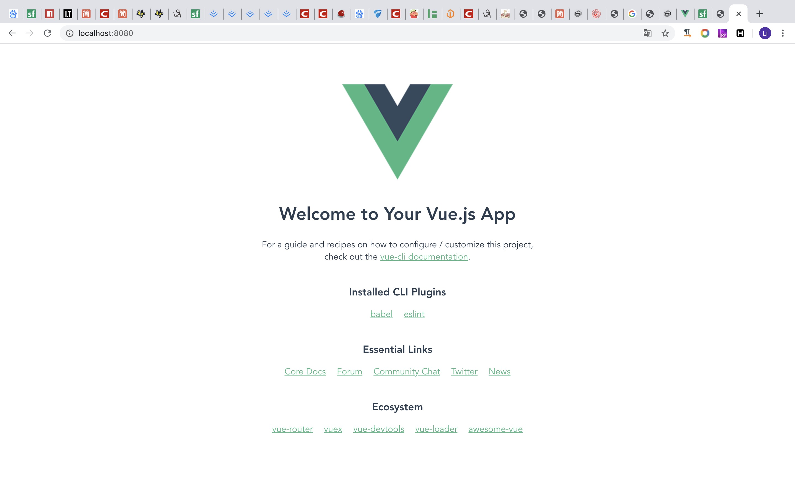

前言
近来学了一下vue，用脚手架打了个项目，简单记录一下
官方文档：https://cli.vuejs.org/zh/guide/
安装环境
安装最新版本的vue-cli，我一开始安装的是旧版本的，出现了很多其他的问题，于是我就直接卸了旧版本装新版本了，安装可以用npm也可以用yarn，因为我都是用npm，所以下面也只写npm
卸载旧版本
1 | npm uninstall vue-cli -g |
安装新版本
1 | npm install -g @vue/cli |
检查版本
1 | vue --version |
创建项目
可以通过命令行创建
1 | vue create test |
也可以通过phpstorm/webstorm创建
在mac下有可能会遇到各种Error: EACCES: permission denied权限问题
这里给出了解决办法 https://docs.npmjs.com/resolving-eacces-permissions-errors-when-installing-packages-globally
我用的是以下这种方法
建议直接在.bash_profile中修改，因为修改.profile的话，后面我用npm安装express的时候，会出现-bash: express: command not found的问题，直接修改.bash_profile可以解决这个问题
这里可以设置npm的全局安装目录的权限。打开终端，输入如下命令:
1 | sudo chown -R $(whoami) $(npm config get prefix)/{lib/node_modules,bin,share} |
修改.npm目录的权限
1 | sudo chown -R $(whoami) ~/.npm |
运行项目
1 | Successfully created project test. |
看到如下即启动成功

安装vue-router
使用图形化界面安装
1 | $ vue ui |

安装成功后可以在项目文件夹看到多一个router的文件夹
目录结构
要修改的主要就是src目录
assets
主要存放静态文件，比如img
components
功能级组件，可被装在views里面
router
Index.js配置路由
1 | const routes = [ |
views
页面级组件
组件
创建组件
使用组件
要使用组件，就一定要先导入并定义，不然会报错
查看结果
传递数据
父组件向子组件传递
若只传递一个数据
About.vue，绑定一个动态数据
1 | <template> |
getData.vue，子组件通过设置props属性获取值
1 | <template> |
若需要传递多个数据，可以这么绑定
1 | <get-data v-bind="userData"></get-data> |
getData.vue
1 | <template> |
子组件向父组件传递
getData.vue，子组件可以使用 $emit 触发父组件的自定义事件
1 | <template> |
About.vue
1 | <template> |
数据交互
与后台交互获取数据，我使用的是axios库
官方文档：http://www.axios-js.com/zh-cn/docs/
安装
1 | npm install axios |
引入axios
在main.js中引用
1 | import axios from 'axios' |
配置默认值
指定将被用在各个请求的配置默认值，更多参考官方文档
1 | //请求地址 |
发送请求
1 | methods: { |
但是会出现跨域问题
跨域问题
之前开发的时候有跨域问题都是找后台，这里通过配置devServer解决
修改默认请求地址
1 | axios.defaults.baseURL = '/api'; |
新建vue.config.js
https://cli.vuejs.org/zh/config/#vue-config-js
1 | module.exports = { |
proxy的意思就是当我们请求/api/get.php时，实际上是请求http://xxx.xxx.xxx.xxx/api/get.php，如果不想/api被传递，我们则需要重写路径，将/api置为空，这样就不会有错了
后记
具体的语法看官方文档，熟悉之后，就可以快乐使用了，有些组件不想自己打的话，vue还有一套现成的组件库element-ui，我觉得不错，非常方便，按需使用。